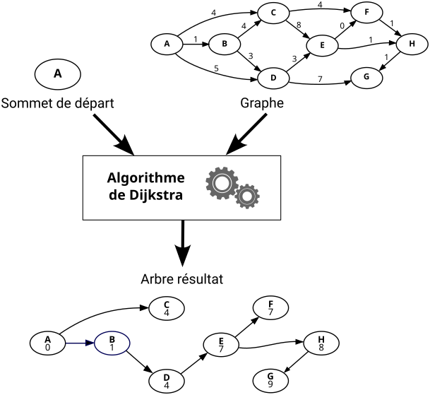

Présentation#
Introduction#
Support du projet
les graphes orientés et plus particulièrement la recherche de chemins dans un graphe, en particulier le chemin le plus long parmi les chemins les plus court entre deux sommet.
{kind=link}
Compétences développées
programmation orientée objet (à partir d’une modélisation déjà ébauchée, et d’une interface partiellement imposée)
codage d’algorithmes déjà établis (parcours de graphe en largeur, recherche du chemin le plus court)
lecture et création de fichiers contenant des données formatées
Documents fournis
un carnet Jupyter
un graphe de démonstration sous la forme d’un dictionnaire Python et d’un fichier au format JSON
Travail demandé
Construire un code Python et un carnet Jupyter qui permettent
de construire un graphe
de manière interactive
depuis des données dans un
depuis des données dans un fichier
de sauver un graphe construit dans un fichier au format JSON
d’analyser le plus court chemin entre tous les couples de sommets d’un graphe,
d’identifier le plus long des plus courts chemins dans un graphe
de construire un rapport textuel (texte brut)
de construire un rapport au format HTML incluant une représentation graphique des graphes
Résultats attendus (livrable)
Une archive au format zip nommé NOM_Prenom.zip déposé sur e-campus,
contenant obligatoirement
un carnet Jupyter traitant le graphe de démonstration (création d’un objet Graphe, chargement des données depuis fichier, )
le fichier a
contenant éventuellement
un fichier de code python nommé “NOM_Prenom.py” (un module)
Graphes#
Définitions#
Un graphe est un couple \(G = (V, E)\) comprenant deux ensembles :
\(V\) un ensemble de sommets (vertices en anglais)
\(E\) un ensemble d’arêtes (edges en anglais), chacune étant une paire de sommets \(\{u, v\}\) avec \(u\), \(v \in V\)
Un graphe orienté est un graphe pour lequel les arêtes sont des couples \((u, v) \in V \times V\). Les arêtes d’un graphe orienté sont souvent appelées arcs. Les graphes orientés sont parfois appelés digraph par contraction de l’anglais directed graph
Un graphe pondéré (ou valué) est un graphe pour lequel un nombre positif est associé à chaque arête. Un graphe pondéré est un triplet \(G = (V, E, w)\) où \(V\) est l’ensemble de sommets, \(E\) est l’ensemble des arêtes et \(w : E \rightarrow \mathbb{R}_+\) est la fonction de pondération. \(w(e)\) est appelé poids de l’arête \(e \in E\).
Un multigraphe est un graphe où \(E\) est un multiensemble (parfois appelé sac), c’est-à-dire une sorte d’ensemble dans lequel chaque élément peut apparaitre plusieurs fois. Un multigraphe autorise plusieurs arêtes entre deux sommets identiques.
Illustration#
Exemple de représentation graphique d’un multigraphe orienté et pondéré

Utilisations#
Un multigraphe orienté et pondéré est un outil de modélisation et d’analyse très répandu dans les sciences de l’ingénieur.
ordonnancement de projet (diagramme de PERT)
système de transport routier, ferroviaire, ou aérien
système de distribution (eau potable, énergie électrique, hydraulique, pneumatique, géothermique …)
structure mécanique en treillis (ouvrage d’art, impression 3D, …)
système polyarticulé (cinématique …)
automate à états finis (automatisation des systèmes)
réseau électrique (lois de Kirchhoff)
routage des circuits intégrés
réseau de communication
Algorithme de Dijkstra#
L’algorithme de Dijkstra résout le problème du plus court chemin dans un graphe. Plus précisément, il calcule les plus courts chemins à partir d’un sommet de départ vers tous les autres sommets dans un graphe orienté pondéré par des réels positifs. Le résultat d’algorithme est un arbre (graphe orienté particulier) dont la racine est le sommet de départ et dans lequel un chemin unique, le plus court, relie deux sommets. Chaque sommet est associé à la plus courte distance qui le sépare du sommet de départ.

Les détails de l’algorithme sont disponibles sur de nombreux sites WEB, par exemple ici : Algorithme de Dijkstra (Wikipédia)
Description de l’algorithme issue de la page “Algorithme de Dijkstra” de Wikipédia.
- G(S, A) un graphe avec une pondération positive poids des arcs
- Sdeb un sommet de S
Sorties :
- P(S, Af) un graphe (arbre de sommet Sdeb)
avec une pondération positive d (distance) des sommets
P := ⌀
d[a] := +∞ pour chaque sommet a
d[sdeb] := 0
Tant qu’il existe un sommet hors de P
Choisir un sommet a hors de P de plus petite distance d[a]
Mettre a dans P
Pour chaque sommet b hors de P voisin de a
Si d[b] > d[a] + poids(a, b)
d[b] := d[a] + poids(a, b)
prédécesseur[b] := a
Fin Si
Fin Pour
Fin Tant que
Modélisation orientée objet#
Le diagramme de classe UML suivant présente trois classes d’objets et leurs relations. On y trouve les classes Graphe, Sommet et Arc. Les relations décrivent qu’un graphe est en relation avec plusieurs sommets et plusieurs arcs et d’un arc est en relation avec un seul sommet source et en relation un seul sommet destination. Inversement un sommet est en relation avec un nombre quelconque d’arcs en tant que source ainsi qu’en tant que destination. Un sommet possède un attribut-donnée nom de type str, un sommet possède un attribut-donnée nom de type str et un arc possède un attribut-donnée poids de type int.
Graphe de démonstration#
{kind=link}
Contenu du fichier graphe_demo.json représentant le graphe de démonstration au format texte JSON
{
"nom": "graphe_demo",
"sommets": ["A", "B", "C", "D", "E", "F", "G", "H", "I", "J"],
"arcs": [
["A", "A", 2],
["A", "B", 5],
["A", "C", 8],
["B", "C", 6],
["B", "D", 8],
["B", "E", 6],
["C", "B", 2],
["C", "D", 1],
["C", "E", 2],
["D", "E", 3],
["D", "F", 1],
["E", "A", 5],
["E", "D", 1],
["E", "G", 5],
["F", "D", 4],
["F", "E", 1],
["F", "G", 3],
["F", "H", 6],
["E", "I", 3],
["G", "H", 2],
["H", "B", 6],
["H", "B", 7],
["I", "J", 4],
["J", "I", 5]
]
}
Dictionnaire Python assigné à donnees et représentant le graphe de démonstration
donnees = {
"nom": "graphe_demo",
"sommets": ["A", "B", "C", "D", "E", "F", "G", "H", "I", "J"],
"arcs": [
("A", "A", 2),
("A", "B", 5),
("A", "C", 8),
("B", "C", 6),
("B", "D", 8),
("B", "E", 6),
("C", "B", 2),
("C", "D", 1),
("C", "E", 2),
("D", "E", 3),
("D", "F", 1),
("E", "A", 5),
("E", "D", 1),
("E", "G", 5),
("F", "D", 4),
("F", "E", 1),
("F", "G", 3),
("F", "H", 6),
("E", "I", 3),
("G", "H", 2),
("H", "B", 6),
("H", "B", 7),
("I", "J", 4),
("J", "I", 5),
],
}
Langage HTML et les tableaux#
HTML (HyperText Markup Language) est un langage de balisage de texte, c’est-à-dire un langage qui enrichit du texte pur avec des balises délimitant des séquences de caractères ou marquant une position à l’intérieur du texte afin de le structurer en paragraphes, en titres, en citations, en partie à mettre en exergue… Parmi les autres langages de balisage on retrouve par exemple \(\LaTeX\) et SVG (Scalable Vector Graphics) pour les images.
HTML décrit la structure d’une page Web, sous la forme d’une série d’éléments balisés. Chaque élément indique au navigateur comment afficher son contenu en l’informant de sa nature (entête, paragraphe, lien, liste, tableau…) et éventuellement de ses attributs.
Les structures types d’un élément HTML sont
<nomBalise>Le contenu de l'élément</nomBalise>pour les éléments avec contenu<nomBalise>pour les éléments sans contenu qui ne possède donc pas de balise fermante
Exemples de balises HTML :
<html>élément racine de la page<head>élément contenant les métadonnées de la page<title>élément contenant la métadonnée “titre de la page”<body>élément contenant le corps de la page qui contient tout ce qui sera visible<h1>élément contenant un titre de niveau 1<h2>élément contenant un titre de niveau 2<p>élément contenant un paragraphe de texte<a>élément qui définit un hyperlien sur son contenu<table>élément contenant un tableau<img>élément pour insérer une image dans une page (pas de contenu ni de balise de fin)
La syntaxe complète du langage de balisage HTML peut être obtenue sur le site w3schools.com.
La figure suivante montre la constitution d’un élément paragraphe

Les attributs d’un élément vont se placer au sein de la balise ouvrante. Ils précisent ou apportent des informations complémentaires sur l’élément. La figure suivante montre un élément hyperlien dont le contenu est le texte “eCampus” et dont l’attribut href précise la destination de l’hyperlien vers https://ecampus.paris-saclay.fr/

La structure type d’une page est :
<!DOCTYPE html>
<html>
<head>
<title>Titre de la page</title>
</head>
<body>
Le contenu est ici...
</body>
</html>
L’affichage du rendu d’une page html peut se faire dans une cellule de code d’un carnet Jupyter de la façon suivante
# Affichage du rendu du tableau html
import IPython.display
IPython.display.IFrame(src="table.html", width=250, height=75)
Des exemples de mises en forme de tableaux sont disponibles sur le site GeeksforGeeks